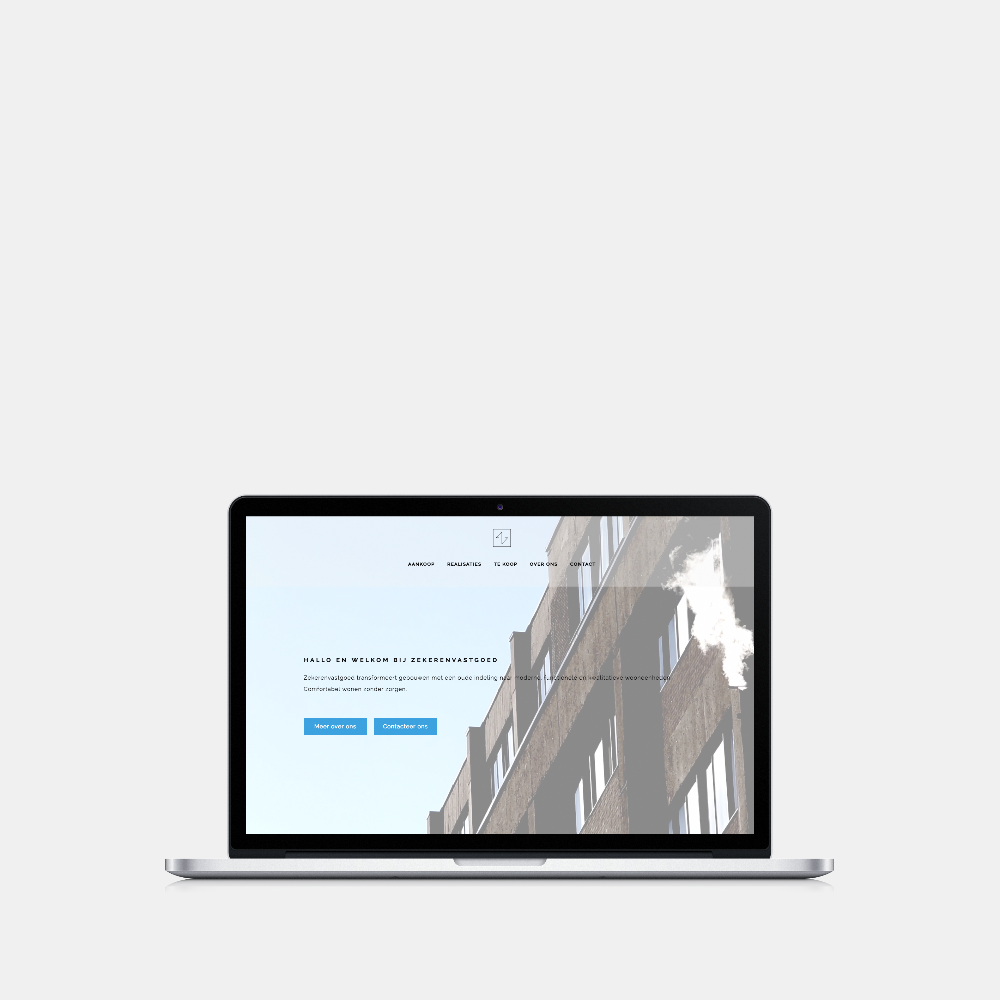

Logo van Satch
Projecten
Projecten
Over Satch
Contacteer ons
01
Fijne projecten voor fijne klanten, daar doen we het voor. Ik kan wel veel zeggen. Gelukkig is spreken zilver en tonen goud.

zekerenvastgoed